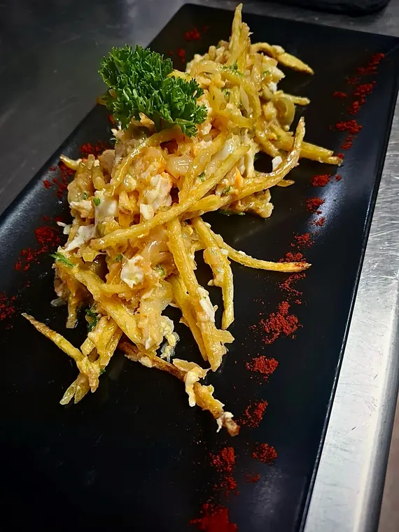
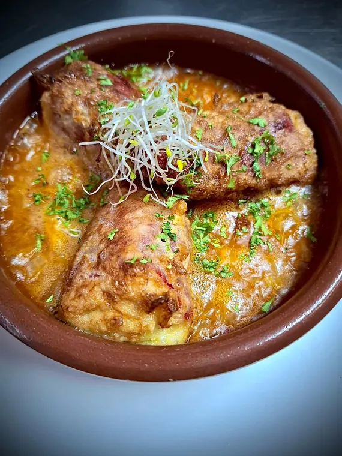
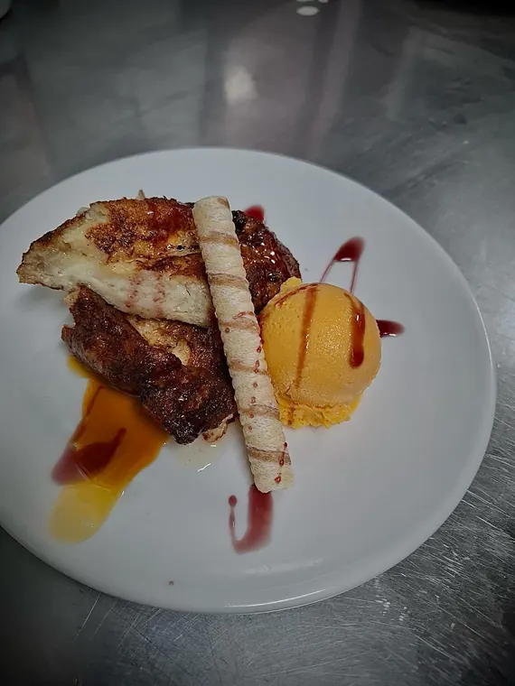
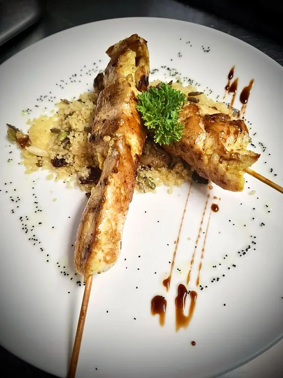

El Alfar, restaurante de cocina de autor en Alcorcón
Cocina de autor y mediterráneaCalle la Higuera 8 · Alcorcón
Menú del día
Cada semana, un menú nuevo
Cuatro entrantes y cuatro segundos para elegir, postre o café, y el vino incluido. Lo escribimos cada semana en esta pizarra: es la mejor forma de conocer nuestra cocina.
Menú de la semana
Ejemplo con platos y precios de otras semanas
Entrantes
Verduritas rellenas de carne con queso gratinado
Pimientos del piquillo rellenos de bacalao en salsa de choricero
Ensalada El Alfar con feta, jamón y guindilla vasca
Brandada de bacalao con ajo frito y pimentón de la Vera
Segundos
Magret de pato a la naranja
Caldereta de carne guisada con patatas
Pincho moruno de pollo sobre cuscús de frutos secos
Bacalhau à Brás con aceitunas verdes
Postres
Tiramisú
Tarta de zanahoria
Torrija de la abuela con helado de mandarina
21 € entre semana · 26 € fin de semana
Incluye vino, agua y postre o café
Han pasado por esta pizarra
Platos de otras semanas que hemos publicado en Instagram. Pulsa la foto o arrástrala para ver la siguiente.
Fotos y platos de @restaurante.elalfar, publicados entre 2024 y 2025.

Bacalhau à Brás con aceitunas verdesJunio 2025
Pimientos del piquillo rellenos de bacalao en salsa de choriceroJunio 2025
Torrija de la abuela con helado de mandarinaJunio 2025
Pincho moruno de pollo sobre cuscús de frutos secosJunio 2025 Brandada de bacalao con ajo frito y pimentón de la VeraMarzo 2025
Brandada de bacalao con ajo frito y pimentón de la VeraMarzo 2025- Ensalada El Alfar: feta, jamón, croutons, cherry y guindilla vascaMarzo 2025
- Tournedó de ibérico al suave de mostazaMarzo 2025
- Tarta de mousse de maracuyáMarzo 2025
- Pastel frito de manzana y pasas con helado de turrónMarzo 2025
- Albóndigas de rabo de toro rellenas de boletusEnero 2025
- Pastel de berenjena, carne y queso fetaNoviembre 2024
- Fideuá con suave de alioliNoviembre 2024
- Torrija de la abuela con helado de mascarponeNoviembre 2024
- Cazuela de almejasOctubre 2024
- Cochinillo a baja temperatura con crema de calabaza y patata panaderaSeptiembre 2024
- Risotto de setasSeptiembre 2024


La carta
La carta de El Alfar
Las tostas
- Tosta de solomillo de cerdo12 €Con philadelphia y pimientos agridulces.
- Tosta de gulas y gambas al ajillo10 €Gratinadas con alioli.
- Tosta de escalivada14 €Con láminas de bacalao confitado y sal de ajo.
- Tosta de pisto vasco12 €Con torta del Casar.
Los fríos
- Ensalada César14 €Con croûtons de pan, bacon frito y pollo empanado en panko.
- Ensalada de queso de cabra15 €Sobre picadillo de tomate y vinagreta de frutos secos.
- Tartar de salmón y aguacate18,50 €
Los calientes
- Pulpo a la plancha24 €Con aceite de chorizo, cachelos y sal negra.
- Flores de alcachofa confitadas17 €Sobre salmorejo cordobés y papada ibérica.
- Croquetas del día12 €
- Tempura de verduras y langostino15 €Con salsa agridulce.
- Ollitos ají de pato confitado17 €Con queso feta y ají colombiano.
Del mar
- Rodaballo gratinado con alioli24 €Sobre fideuá negra.
- Bacalao confitado al pil pil26 €Con cama de ajoarriero.
- Timbal de lubina23 €Relleno de puerro y gambas, sobre salsa americana.
De la tierra
- Steak tartar26 €Con láminas de pan crujiente.
- Carrilleras de ibérico estofadas24 €Con puré de manzana, vainilla y tomillo.
- Solomillo de ternera con salsa perigord26 €Y milhojas de patata y bacón.
Los dulces
- Tarta fina de manzana al tomillo7,50 €Con helado de vainilla.
- Brownie de chocolate con nueces6,50 €
- Sorbete de limón al cava6,50 €Con hierbabuena.
Carta y precios de octubre de 2025. Si tienes alguna alergia, dínoslo al reservar.
El comedor
Pasa, que te enseñamos la casa
Un comedor pequeño, con luz cálida, papel pintado de hojas y una barra blanca con nuestro logo.
Tenemos pocas mesas. Mejor reservar.
Reservar mesaLa casa
Un taller de cocina con calma de barrio
Un alfar es el taller donde se trabaja el barro. En El Alfar trabajamos la cocina con la misma idea: a mano, con calma y plato a plato.
Cocina de autor y mediterránea: recetas de siempre, como unas albóndigas de rabo de toro o un bacalao al pil pil, junto a sabores que vienen de más lejos, como un tataki de salmón con plátano macho o unos ollitos de pato con ají colombiano.
Opiniones
Opiniones de nuestros clientes
4,9 sobre 5 con 336 opiniones en Google Maps.
9,5sobre 10 en TheFork, con 36 opiniones de comida, servicio y ambiente.
“Un descubrimiento en Alcorcón”
5/5Google
Una gran sorpresa en Alcorcón y un sitio que nos encantó, empezando por el servicio […] Muy buena relación calidad/precio en un ambiente tranquilo, cómodo y romántico. Perfecto para ir con tu pareja.
Francisco Rojas 5/5Google
Menú del día espectacular en calidad-precio y más entre semana. Es un gustazo de sitio por comida y atención del personal. Muy, muy recomendable.
Javier Rodríguez 5/5Google
Excelente restaurante donde no esperas encontrarlo. Buen local, bien climatizado, agradable. Cocina con mezcla de tradicional y exótico […] Reserve, hay pocas mesas.
Bebe, come, ama 10/10TheFork
Comida cuasi perfecta, servicio impresionante […] Menú de fin de semana muy completo con raciones más que abundantes.
Martin B.
9,5/10TheFork
Local pequeño en una zona residencial, que quizá de entrada no da la apariencia de ser un sitio especial… hasta que pruebas la comida. Salimos sorprendidos de la calidad de todo lo que tomamos.
Carlos O. 9,5/10TheFork
Una gran experiencia gastronómica. Desde el aperitivo, hasta el postre. Las carrilleras dignas de mencionar, excelentes y la tarta de queso también.
Andres R. 10/10TheFork
Cena con amigas maravillosa […] la comida estaba genial, rica y muy bien presentada y el servicio excepcional.
Patricia C. 10/10TheFork
Ambiente acogedor, buen servicio y excelente comida. Repetiremos sin dudarlo y recomendaremos a familiares y amigos.
Carlos F.
5/5Google
Nos ha encantado, un sitio tranquilo y acogedor. Un trato excelente. La comida buenísima. Un descubrimiento en Alcorcón.
LOVI 5/5Google
Menú muy muy rico […] Los postres también nos encantaron, tanto el tiramisú como la tarta de zanahoria, pero os recomiendo más el tiramisú si está disponible cuando vayáis.
M M 9,5/10TheFork
Un descubrimiento, comida muy rica, camarero muy amable y ambiente tranquilo. Pedimos combinar carta con un par de platos del menú que nos apetecían y no pusieron objeción.
José Antonio G. 10/10TheFork
Muy bien aconsejados y la comida espectacular, para repetir pronto.
Alfonso S.
10/10TheFork
Hemos tomado 4 menús de fin de semana y todo estaba exquisito. Cantidades perfectas, servicio excelente, muy buena relación calidad precio. Repetiremos.
Ana S. 10/10TheFork
Un restaurante muy acogedor, tranquilo y la comida es exquisita, ya hemos ido en más ocasiones a comer menú diario, de fin de semana y a la carta, todo de diez.
Paloma P. 10/10TheFork
Mejor que bien. Cenamos súper bien platos muy ricos. La atención del personal maravillosa. Sin duda, volveré.
Isabel G. 10/10TheFork
Todo estaba muy bien cocinado, la atención fenomenal, se lo recomiendo a todo el mundo.
Enrique F.
Opiniones reales de Google Maps y TheFork, copiadas tal cual y recortadas donde se indica […].

Horario y ubicación
¿Abrimos hoy?
Horario
Horario
De martes a domingo
- Martes13:45 a 17:00Hoy
- Miércoles13:45 a 17:00Hoy
- Jueves13:45 a 17:00Hoy
- Viernes13:45 a 17:00 y 20:45 a 23:45Hoy
- Sábado13:45 a 17:00 y 20:45 a 23:45Hoy
- Domingo13:45 a 17:00Hoy
- LunesCerradoHoy
Si vienes un festivo, llámanos antes para confirmar el horario.
Ubicación
¿Prefieres el mapa de Google? Solo se carga si lo pides; al cargarlo, Google puede guardar sus propias cookies.
28922 Alcorcón (Retamas)
- AutobúsParadas a 2 minutos, en la avenida de las Retamas (líneas 516, 2 y 450)
- Metro y trenA unos 20 minutos andando: Parque Lisboa (L12), Puerta del Sur (L10 y L12) y Cercanías Las Retamas (C-5)
- Teléfono914 49 10 31
- ReservasOnline, en CoverManager
¿Hace falta reservar?
Te lo recomendamos: tenemos pocas mesas. Puedes reservar online en un par de minutos o llamarnos al 914 49 10 31.
¿Qué incluye el menú del día?
Un entrante y un segundo a elegir entre los cuatro de cada semana, postre o café, vino y agua. Los platos y el precio de esta semana los tienes arriba, en el menú de la semana; si tienes dudas, llámanos.
¿Abrís por la noche?
Sí, los viernes y los sábados de 20:45 a 23:45. De martes a domingo abrimos a mediodía, de 13:45 a 17:00. Los lunes cerramos.
Tengo una alergia, ¿puedo comer con vosotros?
Claro. Dínoslo al reservar o al llegar a la mesa y te contamos qué lleva cada plato.
¿Hacéis comidas de grupo o celebraciones?
Tenemos una mesa larga en el comedor para grupos. Llámanos con unos días de margen y lo preparamos.
¿Cómo llego en transporte público?
En autobús es lo más cómodo: hay paradas a dos minutos, en la avenida de las Retamas (líneas 516, desde Príncipe Pío, 2 y 450). El metro (Parque Lisboa o Puerta del Sur) y el Cercanías de Las Retamas quedan a unos 20 minutos andando.
Reservas
Tu mesa en El Alfar
Dinos cuántos sois y te ponemos la mesa. Reserva online en un par de minutos o llámanos; si tienes alguna alergia, cuéntanoslo al reservar.
¿Cuántos sois?
Mesa para dos, junto a la ventana o al fondo del comedor.